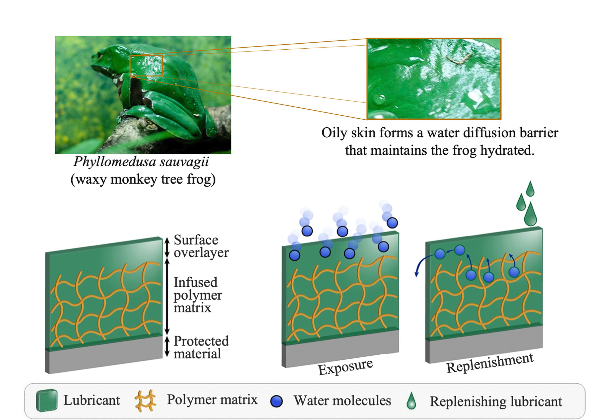
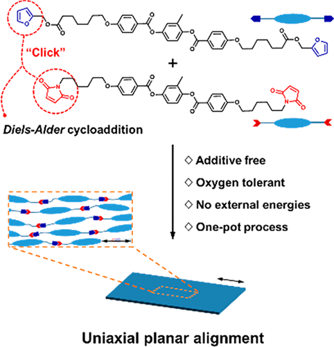
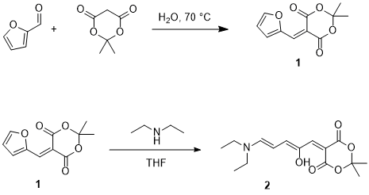
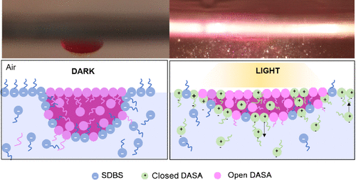
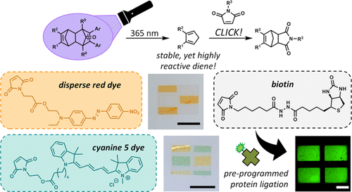

2024

Programming liquid crystal elastomers for multi-step ambidirectional deformability.
Yao, Y.*, Wilborn, M.*, Lemaire, B., Trigka, F., Stricker, F., Li, S., Grinthal, A., Zhernenkov, M., Freychet, G., Wasik, P., Bennet, R., Tung, C., Kozinsky, B., Lerch, M., Wang, X., Aizenberg, J. Science, 2024, 386, 1161–1168.
DOI
Photo-responsive Diels–Alder based azobenzene-functionalized main-chain liquid crystal networks.
Park, M., Campos, J., Stricker, F., Read de Alaniz, J. Journal of Materials Chemistry C, 2024, 12, 11976–11981.
DOI
2023
Selective control of donor-acceptor Stenhouse adduct populations with non-selective stimuli.
Stricker, F.*, Peterson, J.*, Sandlass, S., de Tagyos, A., Sroda, M., Seshadri, S., Gordon, M., Read de Alaniz, J. Chem, 2023, 9, 1994–2005.
DOI
Controlled Diels–Alder “Click” Strategy to Access Mechanically Aligned Main‐Chain Liquid Crystal Networks.
Stricker, F.*, Campos, J.*, Clark, K. D., Park, M., Bailey, S. J., Kuenstler, A. S., Hayward, R. C., Read de Alaniz, J. Angew. Chem. Int. Ed., 2023, 135, e202214339.
DOI
Effect of polymer host matrix on multi-stage isomerization kinetics of DASA photochromes.
Sandlass, S., Stricker, F., Fragoso, D., Read de Alaniz, J., Gordon, M. Journal of Photochemistry and Photobiology A: Chemistry, 2023, 444, 114964.
DOI

Flexible fluid-based encapsulation platform for water-sensitive materials.
Lemaire, B., Yu, Y., Molinari, N., Wu, H., Goodwin, Z., Stricker, F., Kozinsky, B., Aizenberg, J. Proceedings of the National Academy of Sciences, 2023, 120, e2308804120.
DOI

Design of Surface-Aligned Main-Chain Liquid-Crystal Networks Prepared under Ambient, Light-Free Conditions Using the Diels–Alder Cycloaddition.
Park, M., Stricker, F., Campos, J., Clark, K., Lee, J., Kwon, Y., Valentine, M., Read de Alaniz, J. ACS Macro Letters, 2023, 12, 33–39.
DOI
2022
A multi-stage single photochrome system for controlled photoswitching responses.
Stricker, F., Sanchez, D., Raucci, U., Dolinski, N., Zayas, M., Hawker, C., Martinez, T., Read de Alaniz, J. Nature Chemistry, 2022, 14, 942–948.
DOI

Preparation of a Donor-Acceptor Stenhouse Adduct.
Stricker, F., Peterson, J., Read de Alaniz, J. Org. Synth. 2022, 99, 79.
DOI
Donor-acceptor Stenhouse Adducts. In Molecular Photoswitches: Synthesis, Properties, and Applications.
Stricker, F., Seshadri, S., Read de Alaniz, J., In: Pianowski, P., Wiley-VCH, 2022, 304–325.
DOI
Role of material composition in photothermal actuation of DASA-based polymers.
Sroda, M., Lee, J., Kwon, Y., Stricker, F., Park, M., Valentine, M., Read de Alaniz, J. ACS Applied Polymer Materials, 2022, 4, 141–149.
DOI
Improving the kinetics and dark equilibrium of donor–acceptor Stenhouse adduct by triene backbone design.
Peterson, J., Stricker, F., Read de Alaniz, J. Chemical Communication, 2022, 58, 2303–2306.
DOI
Controlling the Isomerization of Photoresponsive Molecules through a Limiting Tautomerization Strategy.
Duan, Y., Zhao, H., Yue, G., Sun, F., Stricker, F., Wang, Z., Mao, L., He. C., Read de Alaniz, J., Zheng, Y., Wang, D. The Journal of Physical Chemistry B, 2022, 126, 3347–3354.
DOI
2021
Promoting the Furan Ring‐Opening Reaction to Access New Donor–Acceptor Stenhouse Adducts with Hexafluoroisopropanol.
Stricker, F.*, Clerc, M.*, Ulrich, S., Sroda, M., Bruns, N., Boesel, L., Read de Alaniz J. Angew. Chem. Int. Ed., 2021, 60, 10219–10227.
DOI
Facile access to foldable redox-active flavin-peptide conjugates.
Stricker, F., Koelsch, J., Beil, S., Preiss, S., Waldvogel, S., Opatz, T., Besenius, P. Org. Biomol. Chem., 2021, 19, 4483–4486.
DOI
Donor–acceptor Stenhouse adducts: exploring the effects of ionic character.
Stricker, F.*, Sroda, M.*, Peterson, J., Bernal, A., Read de Alaniz, J. Chem. Eur. J., 2021, 27, 4183–4190.
DOI

Influence of Polarity Change and Photophysical Effects on Photosurfactant-Driven Wetting.
Seshadri, S., Bailey, S., Zhao, L., Fisher, J., Sroda, M., Chiu, M., Stricker, F., Valentine, M., Read de Alaniz, J., Helgeson, M. Langmuir, 2021, 37, 9939–9951.
DOI

Shining Light on Cyclopentadienone–Norbornadiene Diels–Alder Adducts to Enable Photoinduced Click Chemistry with Cyclopentadiene.
Bailey, S., Stricker F., Hopkins, E., Wilson, M., Read de Alaniz, J. ACS Applied Materials and Interfaces, 2021, 13, 35422–35430.
DOI
2019
Photoinduced deadhesion of a polymer film using a photochromic donor–acceptor Stenhouse adduct.
Mostafavi, S., Li, W., Clark, K., Stricker, F., Read de Alaniz, J., Bardeen, C. Macromolecules, 2019, 52, 6311–6317.
DOI
2018

Controlling dark equilibria and enhancing donor–acceptor Stenhouse adduct photoswitching properties through carbon acid design.
Hemmer, J., Page, Z., Clark, K., Stricker, F., Dolinski, N., Hawker, J., Read de Alaniz, J. Journal of the American Chemical Society, 2018, 140, 10425–10429.
DOI
2016
Kinetically Controlled Sequential Growth of Surface‐Grafted Chiral Supramolecular Copolymers.
Frisch, H., Fritz, E., Stricker, F., Schmueser, L., Spitzer, D., Weidner, T., Ravoo, B., Besenius, P. Angew. Chem. Int. Ed., 2016, 55, 7242–7246.
DOI